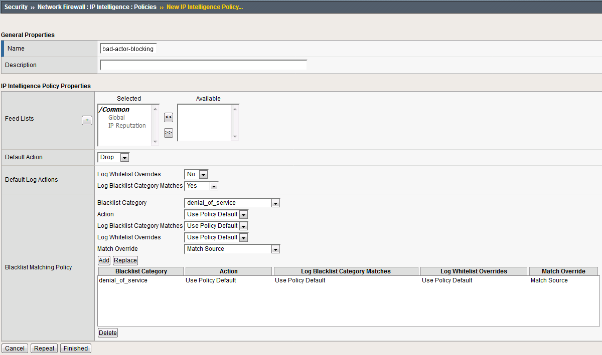

6.2.10. Bad Actor Detection¶
Bad actor detection and blacklisting allows us to completely block communications from malicious hosts at the BIG-IP, completely preventing those hosts from reaching the back-end servers. To demonstrate:
Navigate to Security > DoS Protection > DoS Profiles.
Click on the dns-dos-profile profile name.
Click on the Protocol Security tab then select DNS Security.
Click on the DNS A Query attack type name.
Modify the vector as follows:
Bad Actor Detection: Checked
Per Source IP Detection Threshold EPS: 80
Per Source IP Mitigation Threshold EPS: 100
Add Source Address to Category: Checked
Category Name: denial_of_service
Sustained Attack Detection Time: 15 seconds
- Category Duration Time: 60 seconds
Make sure you click Update to save your changes.
Navigate to Security > Network Firewall > IP Intelligence > Policies and create a new IP Intelligence policy with the following values, leaving unspecified attributes at their default values:
- Name: dns-bad-actor-blocking
- Default Log Actions section:
- Log Blacklist Category Matches: Yes
- Blacklist Matching Policy
- Create a new blacklist matching policy:
- Blacklist Category: denial_of_service
- Click Add to add the policy then click finished
- Create a new blacklist matching policy:
Navigate to Local Traffic > Virtual Servers > Virtual Server List.
Click on the udp_dns_VS virtual server name.
Click on the Security tab and select Policies.
- Enable IP Intelligence and choose the dns-bad-actor-blocking policy.
Make sure you click Update to save your changes.
Navigate to Security > Event Logs > Logging Profiles.
Click the global-network logging profile name.
- Under the Network Firewall tab (next to Protocol Security), set the IP Intelligence Publisher to local-db-publisher and check Log Shun Events.
Click Update to save your changes.
Click the dns-dos-profile-logging logging profile name.
- Check Enabled next to Network Firewall.

- Under the Network Firewall tab, change the IP Intelligence Publisher to local-db-publisher and click Update.
Bring into view the Victim Server SSH session running the top utility to monitor CPU utilization.
- On the Attack Server host, launch the DNS attack once again using the following syntax:dnsperf -s 10.20.0.10 -d queryfile-example-current -c 20 -T 20 -l 30 -q 10000 -Q 10000
- You’ll notice CPU utilization on the BIG-IP begin to climb, but slowly drop. The attack host will show that queries are timing out as shown below. This is due to the BIG-IP blacklisting the bad actor.

Navigate to Security > Event Logs > Network > IP Intelligence. Observe the bad actor blocking mitigation logs.
- Navigate to Security > Event Logs > Network > Shun. This screen shows the bad actor being added to (and later deleted from) the shun category.

While the attack is running, navigate to Security > DoS Protection> DoS Overview (you may need to refresh or set the auto refresh to 10 seconds). You will notice from here you can see all the details of the active attacks. You can also modify an attack vector right from this screen by clicking on the attack vector and modifying the fly out.
{kind=link}
{kind=link}
{kind=link}
{kind=link}
{kind=link}
{kind=link}
- Navigate to Security > Reporting > Protocol > DNS. Change the View By drop-down to view various statistics around the DNS traffic and attacks.

Navigate to Security > Reporting > Network > IP Intelligence. The default view may be blank. Change the View By drop-down to view various statistics around the IP Intelligence handling of the attack traffic.
- Navigate to Security > Reporting > DoS > Dashboard to view an overview of the DoS attacks and timeline. You can select filters in the filter pane to highlight specific attacks.

Finally, navigate to Security > Reporting > DoS > Analysis. View detailed statistics around each attack.